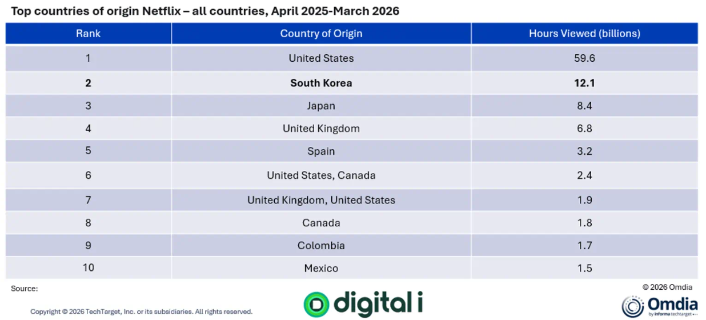
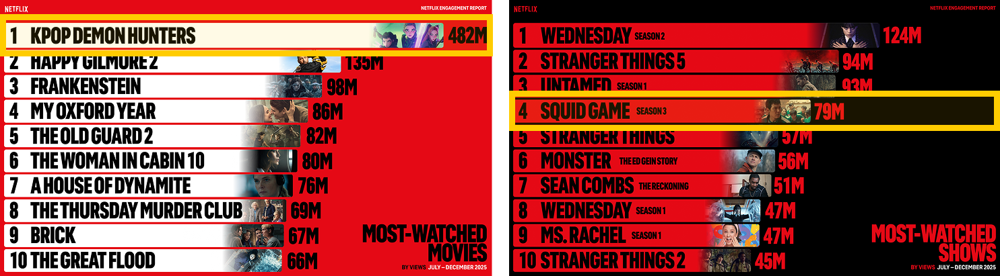
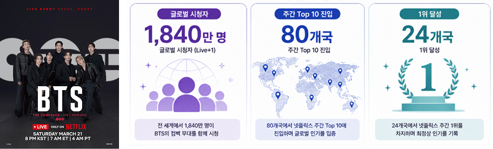
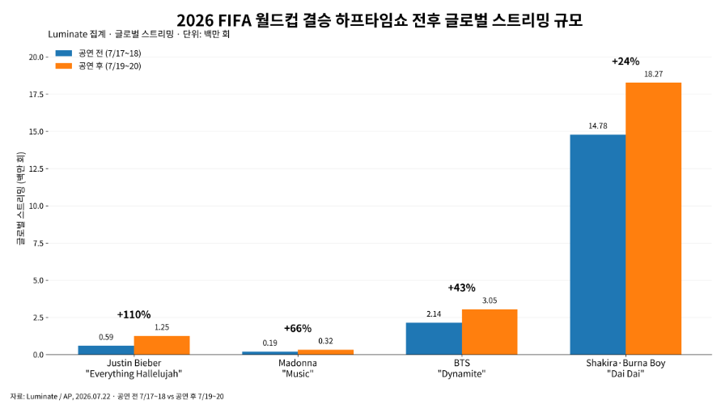
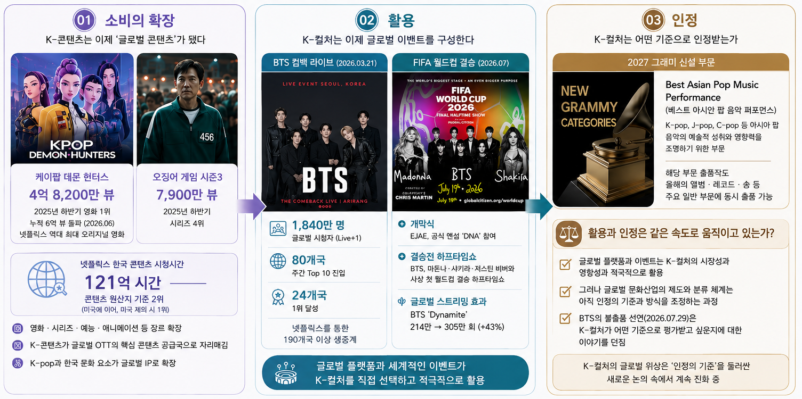

K-콘텐츠의 글로벌 영향력을 보여주는 가장 직접적인 지표는 시청 규모다. <표1>과 같이 Omdia와 Digital i가 분석한 자료에 따르면, 2025년 4월부터 2026년 3월까지 한국 콘텐츠는 넷플릭스에서 121억 시간의 시청을 기록했다. 콘텐츠 제작국 기준 미국에 이어 2위로, 일본보다 44% 많고 영국의 거의 두 배에 달하는 규모다. 이 숫자가 중요한 이유는 K-콘텐츠의 글로벌 성공이 더 이상 일부 작품의 흥행만으로 설명되지 않기 때문이다. <오징어 게임>과 같은 초대형 히트작이 글로벌 시장의 문을 열었다면, 이제는 여러 작품과 장르가 축적되면서 한국이 하나의 주요 콘텐츠 공급국으로 자리 잡았다.

[표 1] 넷플릭스 콘텐츠 제작국별 글로벌 시청시간 (2025년 4월 ~ 2026년 3월)
※ 출처 : Omdia · Digital i, 2026
소비의 범위도 넓어지고 있다. 넷플릭스의 2025년 하반기 시청 데이터에 따르면 전 세계 회원들의 시청량은 960억 시간에 달했으며, 이 가운데 비영어권 콘텐츠가 전체 시청의 3분의 1 이상을 차지했다. 한국 콘텐츠는 영화와 시리즈 등 여러 분야에서 높은 시청량을 기록했다([그림1] 참고). <KPop Demon Hunters>는 4억8,200만 뷰로 해당 기간 넷플릭스에서 가장 많이 시청된 작품이 됐고, <오징어 게임 시즌3>는 7,900만 뷰로 시리즈 부문 4위를 기록했다.
2026년 상반기에도 이러한 흐름은 이어졌다([그림2] 참고). 한국 작품인 <참교육>은 4,800만 뷰를 기록하며 해당 기간 넷플릭스 시리즈 Top 10에 이름을 올렸다. 이처럼 K-콘텐츠의 글로벌 경쟁력은 특정 작품의 일시적인 흥행을 넘어 여러 작품과 장르로 확산되며 글로벌 시청 기반을 넓혀가고 있다. 한국 콘텐츠가 글로벌 OTT 이용자에게 하나의 익숙한 선택지로 자리 잡고 있다는 의미다.

[그림 1] 2025년 하반기 넷플릭스 상위 시청 순위 (무비 & 쇼 부문)
※ 출처 : Netflix 홈페이지 (What We Watched the Second Half 2025 About Netflix)

[그림 2] 2026년 상반기 넷플릭스 상위 시청 순위 (무비 & 쇼 부문)
※ 출처 : Netflix 홈페이지 (What We Watched the First Half 2026 About Netflix)
더 주목할 변화는 K-콘텐츠를 구성했던 문화적 요소 자체가 글로벌 콘텐츠의 소재이자 IP로 확장되고 있다는 점이다. 대표적인 사례가 2025년 넷플릭스에서 공개된 애니메이션 영화 <KPop Demon Hunters>다. 이 작품은 K-팝의 음악과 퍼포먼스, 아이돌 문화와 한국적 이미지 등을 글로벌 애니메이션 IP 안에 결합했다. 2026년 6월에는 누적 6억 뷰를 넘어 넷플릭스 역대 가장 많이 시청된 영화에 올랐고, 93개국에서 모두 Top 10에 진입했으며 76개국에서 1위를 기록했다. 음악으로의 확장도 두드러진다. 사운드트랙 수록곡들은 2026년 6월 기준 글로벌 누적 스트리밍 150억 회를 넘어섰고, 대표곡 ‘Golden’은 빌보드 Global 200에서 18주간 1위를 기록하며 글로벌 음악시장에서 애니메이션 역대 최대 타이틀을 획득하게 되었다.
이 사례가 중요한 이유는 단순히 ‘K-팝을 소재로 한 애니메이션이 성공했다’는 데 있지 않다. K-콘텐츠의 문화적 요소가 음악·애니메이션·캐릭터·스토리 등으로 확장되며 하나의 글로벌 IP 생태계를 형성하고 있다는 점에 의미가 있다. 결국 K-콘텐츠의 글로벌 경쟁력은 ‘한국에서 만들어진 콘텐츠를 해외에서 소비하는 단계’에서 ‘한국의 문화적 요소 자체가 글로벌 콘텐츠를 구성하는 단계’로 이동하고 있다.
K-콘텐츠의 글로벌 소비가 확대되면서 K-컬처를 활용하는 방식도 달라지고 있다. 이제 글로벌 플랫폼과 세계적인 이벤트는 K-컬처를 단순히 편성하거나 소개하는 데 그치지 않고, 시청자를 끌어모으고 콘텐츠와 무대를 구성하는 문화적 자원으로 활용하기 시작했다.
대표적인 사례가 2026년 3월 BTS의 컴백 공연이다. 3월 21일 서울 광화문광장에서 열린 <BTS THE COMEBACK LIVE | ARIRANG>은 넷플릭스를 통해 190개국 이상에 생중계됐다. 넷플릭스에 따르면 이 공연은 1,840만 명의 글로벌 시청자(Live+1)를 기록했으며, 80개국에서 주간 Top 10에 진입하고 24개국에서 1위를 차지했다([그림3] 참고). 여기서 주목할 점은 넷플릭스가 BTS의 기존 콘텐츠를 유통한 것이 아니라 한국에서 열리는 공연 자체를 글로벌 라이브 이벤트로 확장했다는 점이다. 이는 K-컬처가 글로벌 플랫폼의 콘텐츠 라이브러리에 포함되는 것을 넘어, 플랫폼의 글로벌 시청자를 끌어모으는 대형 이벤트의 중심 콘텐츠로 활용되고 있음을 보여준다.

[그림 3] 넷플릭스의 BTS THE COMEBACK LIVE 글로벌 도달 범위
※ 참고 : HYBE·Netflix 자료 바탕으로 자체 구성
이러한 흐름은 FIFA 월드컵에서도 이어졌다. 2026 FIFA 월드컵에서는 가수 이재(EJAE)가 안드레아 보첼리(Andrea Bocelli), 데이비드 게타(David Guetta), 메건 디 스탤리언(Megan Thee Stallion)과 함께 공식 앤섬(Official Anthem) <DNA>에 참여했으며, 개막식에서 이 곡이 공연됐다. 결승전에서는 BTS가 마돈나(Madonna), 샤키라(Shakira), 저스틴비버(Justin Bieber)와 함께 월드컵 사상 처음 열린 결승전 하프타임쇼의 공동 헤드라이너로 무대에 올랐다. 월드컵 결승 하프타임쇼는 전 세계가 동시에 주목하는 글로벌 이벤트다. 이 무대에 K-팝이 포함됐다는 것은 K-팝이 단순히 세계적으로 소비되는 음악 장르를 넘어, 전 세계인이 함께 경험하는 글로벌 이벤트를 구성하는 콘텐츠로 활용되고 있음을 보여준다.
실제 음악 소비에서도 변화가 나타났다. [그림4]와 같이 미국 음악산업 데이터 전문기관 루미네이트(Luminate)가 집계한 월드컵 결승전 하프타임쇼 전후의 곡별 스트리밍 데이터를 살펴보면, BTS의 <Dynamite> 글로벌 스트리밍은 214만 회에서 305만 회로 43% 증가했다. 이는 메가스포츠 이벤트에서의 K-컬처 노출이 실제 음악 소비로 이어지는 파급효과를 보여주는 사례다.
FIFA가 이번 하프타임쇼를 스포츠와 음악, 사회적 영향력을 결합한 글로벌 이벤트로 기획한 것처럼, 이제 K-팝은 글로벌 대중문화의 주변부에서 벗어나 세계적인 이벤트를 구성하는 문화적 자원 가운데 하나로 자리 잡고 있다. 글로벌 플랫폼에서의 K-콘텐츠 소비가 K-컬처의 활용으로 확장되고 있다는 점에서 K-콘텐츠의 위상이 한 단계 변화하고 있음을 보여준다.

[그림 4] 2026 FIFA 월드컵 결승 하프타임쇼 전후 글로벌 스트리밍 규모와 증가율 비교
※ 참고: Luminate·보도자료 바탕으로 자체 구성 (공연 전 7월 17~18일 vs 공연 후 7월 19~20일)
※ 샤키라와 브루노보이(Shakira & Burna Boy)의 <Dia Dai>는 월드컵 공식 앤섬으로 절대 규모가 가장 큰 것임
그렇다면 K-컬처의 글로벌 위상은 이미 완성된 것일까? K-컬처의 ‘활용’은 늘었지만, ‘인정’은 같은 속도로 움직이고 있을까? 글로벌 OTT에서 한국 콘텐츠가 소비되고 K-컬처가 세계적인 이벤트를 구성하는 콘텐츠로 활용되면서 그 위상은 분명 달라졌다. 그러나 글로벌 시장에서의 활용과 문화산업 제도 안에서의 인정은 반드시 같은 의미를 갖는 것은 아니다.
이 차이를 보여주는 사례가 2026년 7월 BTS의 2027년 그래미 불출품 결정이다. 미국 레코딩 아카데미는 2027년 제69회 그래미 어워즈에 ‘Best Asian Pop Music Performance’ 부문을 신설했다. K-팝, J-pop, C-pop 등을 포함한 아시아 팝 음악의 예술적 성취를 조명하는 부문으로, 아시아 언어의 의미 있는 사용 등을 주요 기준으로 제시했다. 그러나 7월 29일 BTS는 음악이 지역이나 언어로 구분되기보다 그 자체로 사랑받기를 바란다는 입장을 밝히며 2027년 그래미에 음악을 출품하지 않겠다고 밝혔다. BTS가 새로운 부문을 직접적으로 비판하거나 불출품 이유를 명시한 것은 아니지만, 이 결정은 새롭게 신설된 아시아 팝 부문을 둘러싼 논쟁과 맞물리면서 ‘K-팝을 어떤 범주로 인정할 것인가’라는 질문을 다시 부각시켰다.
이는 앞서 살펴본 월드컵과 흥미로운 대비를 이룬다. 월드컵에서는 BTS가 글로벌 이벤트의 중심 무대에 섰지만, 문화산업의 제도와 시상 체계에서는 K-팝의 영향력을 어떤 범주로 분류하고, 어떤 기준으로 평가할 것인지가 여전히 논의되고 있기 때문이다. 물론 레코딩 아카데미는 새로운 아시아 팝 부문이 아시아 음악을 제한하기 위한 것이 아니라 그 영향력과 다양성을 조명하기 위한 것이라고 설명했다. 또한 아시아 팝 부문에 해당하는 작품도 올해의 앨범·레코드·송 등 일반 부문에서 평가받을 수 있다고 밝혔다. 따라서 이번 사례를 단순히 ‘그래미가 K-팝을 인정하지 않는다’의 의미로 해석하는 것은 적절하지 않다. 오히려 글로벌 음악산업이 K-팝의 영향력을 인정하는 방식 자체가 변화하고 있다는 점에 주목할 필요가 있다. 이는 K-컬처의 ‘활용’과 ‘인정’이 반드시 같은 속도로 진행되는 것은 아니라는 점을 보여준다.
과거 K-컬처의 글로벌 진출에서 중요한 질문은 ‘세계 무대에 설 수 있는가’였다. 이제는 질문이 달라지고 있다. ‘어떤 무대에 서는가’, ‘어떤 범주로 분류되는가’, ‘어떤 기준으로 평가받는가’가 새로운 관심사가 되고 있다. 글로벌 플랫폼과 세계적인 이벤트가 K-컬처의 시장성과 대중적 영향력을 적극적으로 활용하는 가운데, 글로벌 문화산업의 제도와 시상 체계 역시 K-컬처를 어떤 범주에 포함하고 어떤 기준으로 평가할 것인지 조정하는 과정에 있다.

[그림 5] K-컬처의 글로벌 위상 변화 성과와 과제 : ‘소비 → 활용 → 인정’
※ 참고 : 본문 내용을 바탕으로 저자 구성. 각 이미지는 Netflix·HYBE·Grammy 홈페이지 자료 활용
결국 2026년의 K-콘텐츠를 설명하는 핵심 변화는 ‘한국 콘텐츠가 세계에서 많이 소비된다’는 사실에만 있지 않다. 한국 콘텐츠를 소비하던 세계의 플랫폼과 이벤트가 이제 K-컬처 자체를 선택하고 활용하기 시작했다는 데 있다. 그리고 그 다음 단계에서 K-컬처는 ‘얼마나 소비되는가’를 넘어 ‘어떻게 활용되고, 어떤 기준으로 인정받는가’라는 새로운 질문과 마주하고 있다.
따라서 앞으로 K-콘텐츠의 글로벌 위상을 측정하는 지표도 달라져야 한다. 얼마나 많이 소비됐는지를 넘어, 세계의 플랫폼과 이벤트가 K-컬처를 얼마나 선택하고 활용하는지, 그리고 글로벌 문화산업이 K-컬처를 어떤 범주로 분류하고 어떤 기준으로 평가하는지까지 살펴봐야 한다. K-콘텐츠의 다음 경쟁력은 단순한 시청량의 증가가 아니라, 세계의 문화산업 안에서 얼마나 중요한 문화적 자원으로 자리 잡는가에 달려 있기 때문이다.
- 조윤희 (2026.6.13.). [월드컵] 개막식 이재·리사에 결승전 BTS…존재감 드높인 K-컬처. <연합뉴스>.
- Danielle Broadway (2026.7.30.) BTS boycott Grammys over new Asian pop award category. <Reuters>.
- FIFA 홈페이지 (2026.6.11.). Maestro Andrea Bocelli, David Guetta, Megan Thee Stallion and EJAE unite on DNA, the Official FIFA World Cup 2026™ Anthem.
- Grammy 홈페이지 (2026.6.16.), Five New Categories And Updates Take Effect For 2027 Grammys.
- Maria Sherman (2026.7.22.). Madonna, BTS and more World Cup halftime performers see jump in song streams, Justin Bieber up 110%. <The Washington Post>.
- Netflix(2026.1.20.). What We Watched the Second Half 2025 About Netflix.
- Netflix(2026.3.25.). BTS Commands the Global Stage as ‘BTS THE COMEBACK LIVE ARIRANG’ Draws 18.4 Millions Global Viewers.
- Netflix(2026.6.18.). ‘KPOP Demon Hunters’ By the Numbers: How the Animated Film Broke Records and Broke Through to Become Our Biggest Title Ever.
- Netflix(2026.7.16.). What We Watched the First Half 2026 About Netflix.
- Omdia (2026.6.18.). Omdia: South Korean productions are Netflix’s most-watched content outside the US.